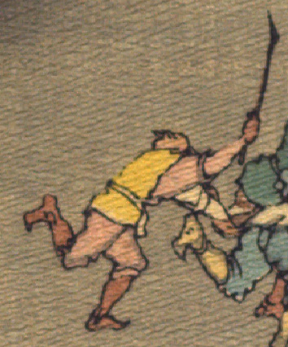

走って逃げる鬼。薄茶色の着物と股引に黄色の上着をまとっている。片手に持った棒状のものを振り上げている。
出典：親書誌：U426_nichibunken_0113：Les Ogres d'Oyeyama／日付：2006／資源識別子：U426_nichibunken_0113_0006_0004
Copyright (c)2010- International Research Center for Japanese Studies, Kyoto, Japan. All rights reserved.